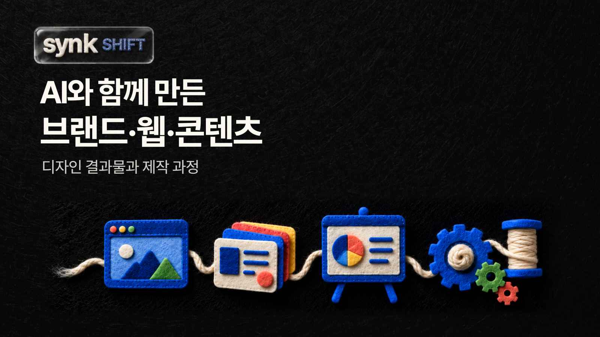

<!doctype html><html lang="ko"><meta charset="utf-8"><meta name="viewport" content="width=device-width"><title>shift-story-cover</title><style>@font-face{font-family:SUIT;src:url('../assets/suit.woff2');font-weight:100 900}@font-face{font-family:Inter;src:url('../assets/inter.ttf');font-weight:400 600}@font-face{font-family:Inter;src:url('../assets/inter-bold.ttf');font-weight:700 900}*{box-sizing:border-box}html,body{margin:0;background:#e7e9ec}body{font-family:Inter,SUIT,sans-serif;color:#000}article{position:relative;overflow:hidden;background:#fff}img{display:block;object-fit:contain}.h{font-size:76px;line-height:1.15;font-weight:800;letter-spacing:-2px;word-break:keep-all}.body{font-size:39px;line-height:1.5;font-weight:500;word-break:keep-all}.small{font-size:27px;line-height:1.5;color:#555}.eyebrow{font-size:26px;line-height:1.3;letter-spacing:1px;font-weight:700;color:#5b626a}.foot{position:absolute;left:76px;bottom:52px;width:928px;font-size:26px;line-height:1.45;color:#515760}.scene{object-fit:cover;border-radius:26px}.glass{background:linear-gradient(130deg,#ffffffed,#f9fbfdba);border:2px solid #dce4eb;border-top-color:#fff;box-shadow:0 6px 0 #d5dee766,0 20px 48px #33404b10,inset 0 0 0 2px #fff;border-radius:32px;padding:42px}.rule{height:1px;background:#dfe3e7}.dark{background:#000;color:#fff}.dark .eyebrow,.dark .small{color:#c1c8ce}</style><article class="" style="width:1080px;height:1350px"><div data-copy class="eyebrow" style="position:absolute;left:698px;top:94px;width:306px;text-align:right;">YUHO BUILDS</div><div data-copy class="h" style="position:absolute;left:76px;top:242px;width:928px;font-size:88px;">만든 이미지를<br>실제 화면에<br>맞추는 일.</div><div data-copy class="body" style="position:absolute;left:76px;top:601px;width:928px;">SYNK SNS 디자인<br>기획, 제작, 적용 검토</div><div data-copy class="foot" style="">SYNK를 만드는 양유호의 작업 기록</div></article></html>